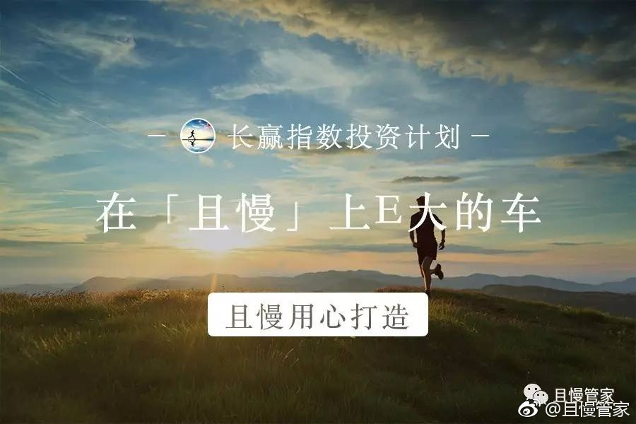

新朋友别再问我以前的能不能补了。且慢关注长赢组合，价格低于往期发车价格就会提示。对于补之前的份额问题，我想不到更方便的方法了。@且慢管家:#理财# @ETF拯救世界 还在为错过某次发车而烦恼么？还在为没有早早上车而遗憾么？且慢“补仓助手”可以解决您的问题。“补仓助手”通过科学计算E大发车净值，智能关注市场行情变化，帮助您以不高于E大发车的成本，补足此前没有持有的计划份数。详情请戳：网页链接 
回复@J_R_Dong:想长牛就尽快让市场回到应该在的位置。人为的拉高估值，只会引发之后更加剧烈的波动。2005年之前，非流动股根本不能减持。结果如何，还不是跌破1000点。正是股权分置改革，全流通，引爆了一轮大牛市。2015、2016连续推出限制重要股东减持的政策，结果如何，股民赔的更多了。---:抱歉，作者已设置仅展示半年内微博，此微博已不可见。
回复@没有钻石的老伍:据我监测了几年的增减持数据，近期减持量越来越少，以至于我都懒得更新减持与净减持家数与金额数据了。突然来这么一出，确实有点让人不理解。---:抱歉，作者已设置仅展示半年内微博，此微博已不可见。
你还是不了解我的体系吗，这么久了。我绝大多数时间不会“看多”“看空”。我只会考虑在这个阶段上涨或者下跌的概率分别有多大。然后根据概率布局。预测未来走势这种事，交给股神去干吧。//@止和观:E大依然看空，慢慢的坐等@ETF拯救世界:三根阳线改三观，还差一根呢……
回复@freeman91酷酷的:可能在你的认知世界中，所有经验都应该来自于自身的错误经历。非常可惜，我对于证券投资的80%以上的，关于“失败”的经验，都来自于他人。所以在金融投资方面，基本上没有走过大的弯路。原因无他，观察，学习，总结，然后趋利避害。@ETF拯救世界:我准备以后写本家训传给后人，第一条就是：永远不要做空美股。